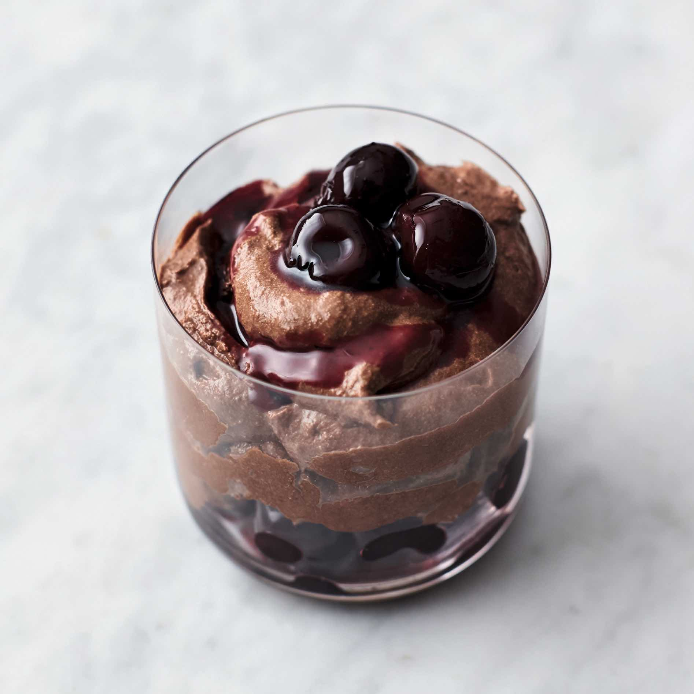

Cherry Chocolate mousse

The perfect after dinner treat
Ingredients
- 200 g quality dark chocolate , (70%)
- 1 x 400 g tin of black pitted cherries in syrup
- 200 ml double cream
- 4 large free-range eggs
- 2 tablespoons golden caster sugar
Recipe Instructions
-
Melt the chocolate in a heatproof bowl over a pan of gently simmering
water, then remove to cool for 10 minutes.
-
Meanwhile, simmer the cherries and their syrup in a non-stick frying pan
on a medium heat until thick, then remove.
- Whip the cream to very soft peaks.
-
Separate the eggs, add the yolks to the cream with the sugar, and whisk
to combine.
-
Add a pinch of sea salt to the whites and, with a clean whisk, beat
until super-stiff.
-
Fold the cooled chocolate into the cream, then very gently fold that
through the egg whites with a spatula.
-
Divvy up the mousse between six glasses or bowls, interspersing the
cherries and syrup throughout, and finishing with a few nice cherries on
top.
This content was sourced from
jamieoliver.com.
Return to Home